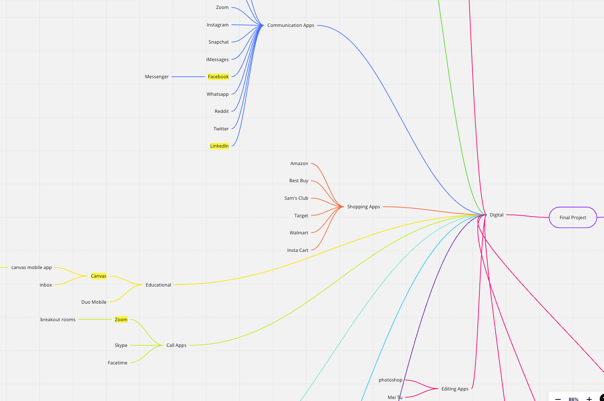

Zoom Redesign
Redesign of an existing system with an emphasis on changing pain points demonstrated by users.
Team: Janzen Molina, Rajvir Logani, Shihan Gong,
Sunay Bargotra, Fiona Liu, Johnathan Tinajero
Each team member played an equivalent role in researching and developing the project.
Background
For our final project, we were to take the issues of an existing product and redesign them based on user feedback and the design fundamentals found in the book The Design of Everyday Things by Don Norman.
Objective
- Observe the user with the product in a simulated scenario in order to understand how they go through a certain flow
- Interview users to understand their pain points with the product and their ideas for how to solve the problem
- Utilize the data from these methods to inform a redesigned version of the product
Brainstorming
Mind Map
Our group started brainstorming by first making a mind map of all of our ideas. The mind map was split into two sections: digital and physical. We leaned towards doing something digital and landed on two options: Zoom, a video communication app and Pronto, a transportation assistance app local to the San Diego area. From here, we made a list of possible problems to explore within the two apps.
Sample of mind map in Miro being used to determine final project idea
We eventually decided on Zoom and its various communication features: video, microphone, chat, and reactions. However, after a few interviews, we realized that covering all of these features may be too overwhelming for one project. We had a meeting and decided that we wanted to focus on the chat, as our data had shown that there were multiple problems in that specific area. These included problems with messaging the wrong person or having trouble distinguishing between the breakout room and main chat.
Interview Methodology
Our interview questions were divided into three categories: general questions, task-based questions, and post-task questions. During the in-person interview, we shared a Zoom link with the interviewees and either sat next to them or video chatted them on another device. While asking interviewees questions, we also did a talk-along process to help the interviewee elaborate on their process better; instead of letting the interviewee fill out the Google Form, the interviewer filled it out while observing the interviewees’ behavior during those assigned questions. After conducting initial interviews, we continued to iterate on our interview process to focus on the chat function as we felt that was one of the major pain points of the app.
We used the master-apprentice model to create our interview questions, as this model allows us to become the students and the participants can play the role of the teacher in order to demonstrate their knowledge to us. We also adapted both open-ended and closed questions as we thought this would allow us to build a solid foundation for collecting qualitative and quantitative data.
Interview Guide
Problems and Trends
Unclear Signifiers
Based on the data, we found that the participants were not able to identify some of the affordances the chat function offered as a result of the lack of clear signifiers. Specifically, the lack of a simple ability to find a particular person to send a direct message becomes frustrating for the participants. 7 out of 21 participants pointed out that scrolling through the list of people to message became an issue in larger meetings because of the longer time it took to find the person’s name in the dropdown list as the number of people in the Zoom meeting increased. This becomes an issue as the participants are consistently making a knowledge-based mistake. There is a much easier way to search for someone in the list of people, found directly above the dropdown menu in the form of a search bar.
However, there is a lack of knowledge from the participants surrounding this feature as demonstrated by the participants who continue to use the more difficult and time-consuming method of scrolling. In fact, participant #9 suggests to us that there should be a search bar in order to make the process more efficient, but the feature itself is already implemented! This lack of knowledge contributing to the participants’ inability to cross the gulf of execution is a result of the lack of easily accessible signifiers within the search bar. Currently, the bar is designed to be flush with the rest of the participant names in the dropdown menu, which makes the text blend in with the overall shape of the list. Furthermore, the text input area for the search bar is a slightly lighter shade of gray compared to the rest of the text, which, to a visually impaired individual, looks almost identical to the point where it would not be apparent to the user that the search bar exists. Lastly, unlike many websites and applications with a search bar function, the list does not give the signifier that it affords being searched through using an icon like a magnifying glass. In parts of the task where recognizing images was key to completing the task correctly, at least 8 of the 21 participants recognized a certain image that gave them hints regarding what function would occur when that particular button or area was interacted with. In the case of the search bar, however, no such icon exists. As a result, the people who rely on the images as a semantic constraint to deduce what would reasonably be done by clicking a button would end up getting confused and not completing the task in the most efficient way possible.
Another trend we noticed surrounding the unclear signifiers is the save transcripts button. A function exists in the Zoom chat that allows you to save a text file of all the recorded messages in the chat directly onto your computer. However, just by looking at the visual signifiers within the interface, you would not be able to guess that. This aligns with the data from our participants, where 11 out of the 22 participants interviewed had to guess where the button to save the transcript as a text file was located. The reason listed by all the participants was that the button itself is hidden by another button displayed as three dots on the interface.
This makes what could be a one-step process into a more complicated two-step process, further proven by all 22 participants who did not give it a score of 5 signifying a clearly easy task on our scale (this will be further elaborated upon in a lower section). Additionally, because the function is hidden behind the three dots, the icon of the dots itself does not provide a signifier that is clear to tell the user that the chat affords being saved through the Zoom application. By means of cultural constraints, the interfaces designed in other applications have dots that users would recognize as a menu that would lead to several different options that could not be all listed on just one screen for visual cleanup and organizational purposes. However, the menu in the Zoom chat for participants only has one option- the save chat function- which defeats the purpose of using the three dots icon and goes against the cultural constraint, which further decreases the ability of the participants to cross the gulf of execution and understands how the saving feature works.
Issues with Direct/Group messages
One trend we noticed in our analysis of the interview data we had (for the second interview) was that a solid acknowledged the commonality of making errors in the chat by accidentally sending a message that was intended to be a direct message to the chat that included everyone and vice versa (sending a chat meant for everyone to someone in a direct message). Four out of 22 participants directly admitted to making this mistake themselves and another 3 acknowledged it’s an issue that they are cautious about and/or have noticed around them. So overall 7 out of 22 of our interviewees have recognized that this error is common. A couple of our interviewees mentioned that it often happened when they typed their message out and hit the enter key to send it without realizing what the chat’s recipient was set at. This can be acknowledged as a mode-error slip based on the fact that the chat user performed the right action but on the wrong setting/mode (the wrong recipient) and/or a memory-lapse mistake because the chat user forgot the current state of the environment (what the recipient was set as). Additionally, it could be considered a description similarity slip in the case that the user was not able to acknowledge the difference in the interface when sending a chat to everyone vs a direct message or vice versa. One of our interviewees provided a prime example of how prevalent this error is and how detrimental it can be by telling us how their “teacher once meant to send a student a direct message and the whole class found out [their] friend was failing” the class. This made it clear to us that the distinction between recipients in Zoom’s chat interface was not clear enough for people to notice and stop themselves from sending a message to the wrong person/people. This comes down to the two signifiers surrounding the direct messaging feature in Zoom. Firstly, the signifier that tells a user who the recipient of a message is does not stand out, making it easy to ignore and nondifferentiable from other words (like “Type message here…” and “Who can see your messages?”) present in the interface. There are differences in that the recipient’s name is black rather than grey and the recipient’s name is highlighted in grey but these are very subtle and don’t do a good enough job of allowing chat users to avoid errors by noticing who they are messaging before they send a message, and thus serve as poor signifiers.
The second signifier of a direct message is the red words that say “(Direct Message)” next to the recipient’s name (right above the text entry box) and next to the actual message that was sent. This signifier is definitely more distinct than the first one due to the red coloring of “(Direct Message)” note which stands out from the rest of the colors. However, this was still not enough for some of our interviewees. One of the 7 interviewees, who was constantly cautious about sending messages to the wrong person, acknowledged the red lettering that tells one whether they’re sending a direct message or not, but noted that she wished there was a “ warning telling you more prominently who you’re sending a message too because it’s not absolutely clear.” These signifiers (the recipient name and the red lettering) are not clear enough for users like her. This same participant noted in her interview that when trying to reach out to an individual in the same Zoom meeting as her, she would go and direct message them on a different platform (like Slack) to avoid both sending a message to the wrong person and the potential of anyone else seeing the message. She would go out of her way to go to another platform to direct message someone because she was more comfortable with the way direct messaging worked on that platform than on Zoom. Furthermore, 7 out of 22 of our participants also noted that it was common for them to lose direct message chats within the stream of chats with everyone. Another 2 participants noted that it was difficult to manage direct messages within the main chat with everyone because the direct message moves up with every message sent to the chat with everyone, requiring one to scroll up to keep track of their direct messages. This made for 9 out of 22 of our interviewees that addressed frustration with direct messages integrated into the chat with everyone. Additionally, 6 out of our 22 participants noted that they had experienced confusion navigating the chat within breakout rooms. 3 out of these 6 interviewees specifically stated that it was confusing to them whether messages sent to the breakout room would only be seen by others in the breakout room or by everyone in the meeting. One of these 3 interviewees stated why, explaining how even messages in breakout rooms say “to everyone” yet means everyone in the breakout room, not in the meeting. This “to everyone” note is a poor signifier as it says the same thing in the main room chat with everyone in it and thus leaves the meaning of the “everyone” recipient very ambiguous. Furthermore, one of the 6 interviewees who had experienced confusion with chats in breakout rooms stated that chats from the breakout rooms were “a bit confusing when you can see the rest of the meeting chat.” This is understandable considering that messages sent to the main chat with everyone and to a breakout room both have the header “to Everyone”. Because messages from breakout rooms and the main room both have the same header and look the same, the only way to truly distinguish between them is by memory of which messages were from the breakout room and which were not. The fact that there is no signifier to distinguish between these types of messages means that the developers of the Zoom chat completely replaced the use of knowledge in the world for knowledge in the head when it came to reintegrating breakout room chats into the main room chat. Additionally, the knowledge in the head required to distinguish between these messages would not even be considered knowledge in the head if a chat user was not paying attention to who sent the message in the breakout room or what the message said, to this user the two types of chats (ones from the breakout room and ones from the main room) would be indistinguishable. This point was evident in the fact that another one of the 6 interviewees who had experienced confusion with chats in breakout rooms firmly believed that all chats from breakout rooms disappeared when you leave said breakout room. While chats from the main room disappear when you go into a breakout room, as noted by another one of those 6 interviewees, chats from breakout rooms don’t disappear when you go back into the main room, they are just camouflaged amongst the other chats and thus not discoverable.
Difficulty when saving chat transcripts
We found that all participants had some trouble when it came to completing task #6. In this task, the users were asked to save a transcript of the Zoom chat on their computer and send the attached text file back into the Zoom chat. On every other task, we found that at least 1 participant would rate the task as a 5, signifying it was an easy thing to do. For example, for task #5, where participants were asked to send an emoji in the chat, 20 out of 22 participants rated the task as a 5 on the same scale as the other given tasks. By contrast, 0 out of 22 participants rated task #6 as a 5, and 6 out of 22 participants rated the task as a 1, signifying the most difficult task imaginable.
The cause of this trend can be traced back to the lack of instructions given by Zoom once the user saves the text file to their computer. Upon saving the chat successfully, the program gives no clue as to how to complete the second half of the task, which involves searching for the text file within the participant’s computer so that they can send it back into the chat. People struggled with this because of their lack of understanding surrounding where the text file went after it was saved, leading to knowledge-based mistakes. This is further narrowed down by the data which demonstrated that 17 out of 22 participants completely and correctly sent any attachment into the Zoom chat while only 13 out of 22 participants correctly sent the text file back into the chat, and many of the participants that correctly did task #6 still took a lot of time to eventually figure it out. This exhibits the idea that the inability to find the file within the device’s storage is the root cause rather than a participant’s inability to send an attachment. There were also participants who specifically did the task incorrectly because they send the wrong file; this could suggest a capture slip. This is because those users may have sent other files several times throughout the day, which is common among the college student demographic that we studied closely. After working with computer files for much of the day, the participant might have sent a recently opened file that was more recurring in the user’s head rather than the desired text file.
Chat Window Positioning
Another trend we recognized in our interview data had to do with preference and feelings that interviewees had regarding the placement of their Zoom chat window. 11 out of our 22 interviewees stated that they preferred to have their chat windows docked to the right side of the Zoom window. One of these 11 interviewees elaborated stating that he was used to this chat orientation because it was standard across other platforms which he used regularly such as Twitch, thus the developers made good use of cultural constancy and knowledge in the head provided by the structure of other common platforms with this chat orientation. This however wasn’t the only orientation the chat showed up in when interviewees clicked the chat button. For 7 out of our 22 interviewees, the chat appeared in a small window separate from zoom in the center of their screen.
Interestingly enough we discovered that 6 out of our 22 interviewees actually preferred the chat in a window. 4 out of these 6 interviewees, however, preferred the window to be placed within a corner of the main Zoom window so it was still there but smaller and out of the way. One of these 4 even stated that they don't like the chat window docked on the right side because it “takes up space” and that having the chat window “floating somewhere on the corner of the screen” was a good alternative that took up less space.
Only one out of our 22 interviewees actually liked the pop-up window showing up in the middle of the screen but noted they would only have it open when they needed to use it and closed it right after while most other interviewees mentioned leaving their chat windows open for longer to the side somewhere. This data showed us that, overall, the most preferred chat orientation was one that was off to the side, but with that being said, making sure that the chat took up a small amount of space and was out of the way was important to our interviewees.
Redesign
As of writing, the Figma files for the redesign are not available for view, so a section of the final report has been included to view the design process of iterating and testing on the prototype.
Reflection
This was my first time collaborating with others on a design project, so the entire process taught me how to better incorporate the design decisions of others into the final product and how to ensure everyone's opinion was heard equally. I can also refer back to this project and several of the concepts I learned that were related to the design fundamentals in the course because of how relevant they are to any design project. For example, thinking about a product's use cases in terms of affordances will help me break down the idea into understandable parts that simplify the process of understanding a more complex user scenario.